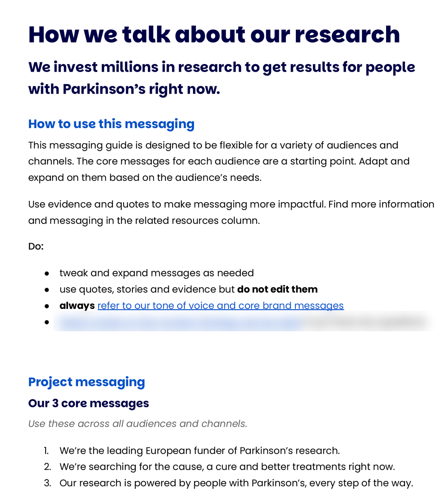
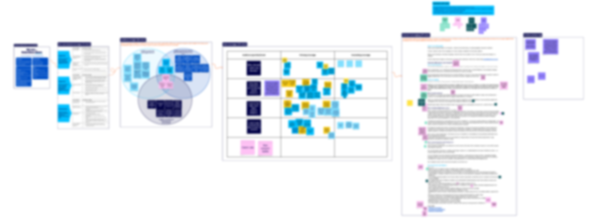

Changing how we talk about research
A research messaging guide shaped by subject matter experts and people with Parkinson’s

FromOutdated research messaging
ToRefreshed messaging for supporters, professionals and people who don’t know about Parkinson’s
The problem
I was the content lead on a project to review how we talk about Parkinson’s research. The old messaging was outdated, and did not reflect our proposed brand personality, the ‘Relentless Doer’. We are supportive, expert and determined, and it was an organisational priority to be determined. That means bolder and more direct.
But research is a very complicated subject. It often jars with our tone of voice, to be simple, accessible and direct, because research by its very nature is complex and clinical.
My approach
It was my job to understand how far we could take the tone for each side, while keeping the user need in mind.
To do this, I hosted a workshop on Lucid where we brought together the research team, which included stakeholders such as the Associate Director of Research, and colleagues from Fundraising. We focused on what needed removing as it was out of date, what our audience needs from our research messaging, and how this was going to be delivered.
The Lucid board I set up for the workshop. I’ve blurred the detail, but you can see how I structured the session:

Key
- Workshop rules and editable Post-it notes
- A recap of our refreshed personality and tone of voice
- Our core audience brand messages
- Existing audience insight
- A group discussion to come up with new core messages for this work
- Current messaging to make notes against
- Further actions log
After gathering the required insight, I set to work on translating our thoughts to a messaging template. We wanted to have 3 core project messages to underpin the entire document, followed by audience specific sections: Supporters, Professionals and people who don’t know anything about Parkinson’s.
To deliver the finished product, I had to set timelines for the stakeholders to review the proposed messaging, as well as include several rounds of feedback. The Content Team Lead and I also organised user testing with users outside of the organisation, including a member of the NHS and a volunteer who has Parkinson’s.
The outcome
Overall, I’m really proud to have delivered refreshed messaging that emphasises how the organisation is not only investing in future treatments, but delivering for people with Parkinson’s right now.